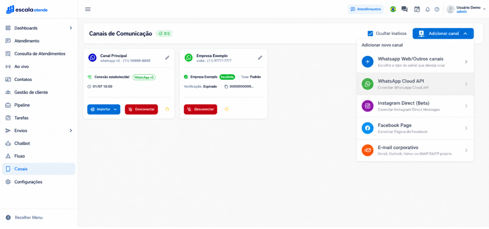
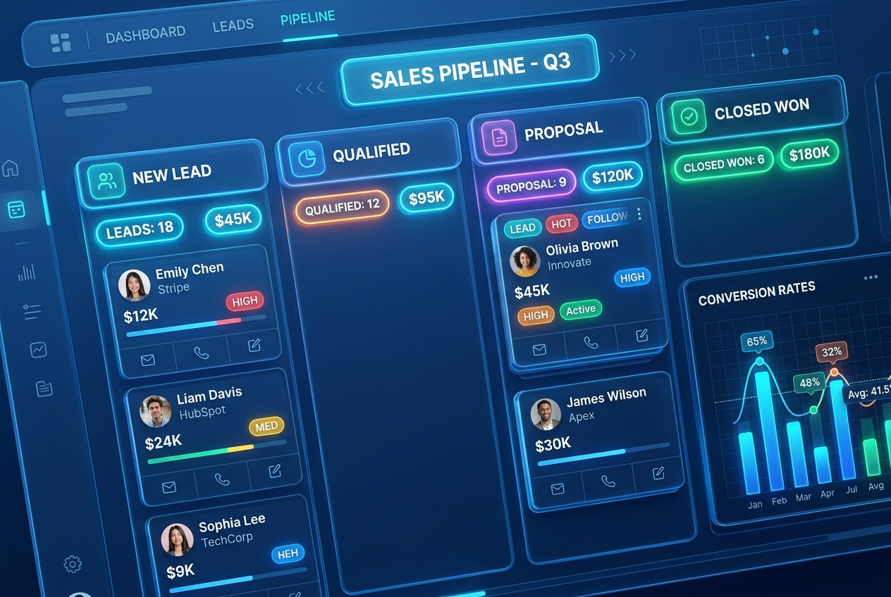
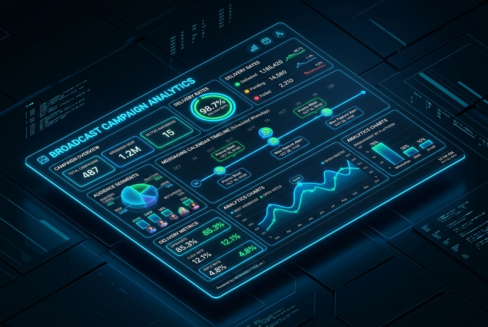
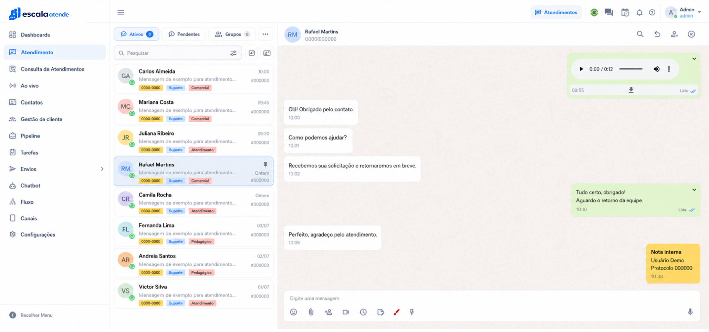

01 · ENTRADA
Tudo chega ao mesmo lugar
WhatsApp, Instagram e outros canais entram em uma fila única, sem conversa escondida em outra aba ou no celular pessoal.
Mais deempresas vendendo todo dia com a gente
Centralize conversas, distribua atendimentos e acompanhe cada oportunidade sem trocar de plataforma.
Quando o WhatsApp vira operação
Mensagens sem responsável, histórico espalhado e oportunidades sem próximo passo fazem a equipe trabalhar mais e a gestão descobrir problemas tarde demais.
WhatsApp, Instagram e outros canais entram em uma fila única, sem conversa escondida em outra aba ou no celular pessoal.
O time sabe quem está atendendo, o que já foi dito e qual é a próxima ação com aquele cliente, sem duplicidade.
Filas, etapas do funil e desempenho deixam de depender de cobrança manual e planilhas paralelas que ninguém atualiza.
É exatamente aí que o Escala Atende entra: cada conversa ganha contexto, responsável e próximo passo.
WhatsApp, Instagram, Facebook e demais canais chegam à mesma operação, com histórico, responsável e etapa da venda. Sua equipe atende sem trocar de tela e a gestão acompanha tudo o que está acontecendo em tempo real.
Ver o Escala Atende em ação
Distribua conversas por equipe, fila e responsável sem perder o histórico ou duplicar atendimentos.
Organize etapas, próximos passos, prazos e responsáveis enquanto a conversa acontece.

Automatize triagem, tire dúvidas e qualifique leads com inteligência artificial antes de encaminhar à equipe.
Programe envios em massa e acompanhe destinatários, taxas de entrega e resultados em uma única visão.

Produto real, operação real
Atendimento, automação, vendas e gestão compartilham o mesmo contexto. As telas abaixo são da plataforma real usada no dia a dia da sua equipe.

Fila, histórico, responsável e dados do contato permanecem juntos enquanto a equipe atende.
Um caminho claro até a operação
Mapeamos a rotina, configuramos a operação e validamos tudo com a equipe antes da entrada em produção.
Conhecer a implantaçãoEntendemos canais, equipe, filas e processo comercial para definir a arquitetura e desenho perfeitos.
Conectamos números, usuários, filas, funil comercial, chatbot e automações conforme a sua necessidade.
Validamos o fluxo com o time e acompanhamos a virada em produção pelo grupo exclusivo no WhatsApp.
Integre CRM, automação, e-commerce, canais e ferramentas comerciais sem reconstruir todo o processo. Nosso time valida o cenário e indica a melhor conexão via webhook ou API.
Mudanças na rotina
Os relatos de quem usa o Escala Atende falam menos sobre ferramenta e mais sobre o que deixou de acontecer: mensagem perdida, retrabalho e cliente esperando.
“Antes, a gente descobria tarde demais que uma conversa tinha ficado sem resposta. Hoje, o time inteiro enxerga a fila e sabe quem está cuidando de cada cliente.”
“O chatbot absorveu as primeiras perguntas repetitivas e liberou nossos corretores para as conversas que realmente precisavam de negociação.”
“WhatsApp e Instagram finalmente passaram a fazer parte do mesmo fluxo. O time deixou de alternar entre 5 telas o dia inteiro.”
Planos Escala Atende
Todas as funcionalidades já inclusas em todos os planos: atendimento unificado, automações com IA, CRM Kanban e relatórios. Você só escolhe a quantidade de usuários e canais da sua equipe.
Transparência total: sem recursos bloqueados ou taxas ocultasIdeal para pequenas operações começarem a vender e atender no WhatsApp com controle.
Para equipes em expansão que precisam de mais atendentes e agilidade na conversão.
Para times consolidados que demandam alta capacidade operacional e múltiplos atendentes.
Para operações com número de usuários e canais muito grande.
Onboarding Acompanhado
Nosso onboarding não é apenas um manual em PDF. São 4 encontros práticos com especialistas, onde fazemos desde as configurações iniciais da ferramenta até o treinamento de todos os seus atendentes, mostrando cada funcionalidade na prática.
Do zero à operação rodando com segurançaSetup completo da plataforma e conexão oficial dos canais de comunicação da sua empresa.
Organização da equipe por setores com regras inteligentes de triagem e direcionamento.
Estruturação dos fluxos automáticos e integração com o CRM Kanban para não perder leads.
Capacitação prática ao vivo com toda a equipe mostrando todas as funcionalidades do sistema.
Para integrações específicas com ERPs legados, fluxos avançados de Inteligência Artificial, APIs dedicadas ou automações customizadas, consulte condições especiais com nossos especialistas.
Personalize sua operação
Todos os planos incluem 1 canal conectado e todas as funcionalidades liberadas. Se a sua empresa precisar de mais números ou mais atendentes, adicione de forma simples e previsível.
Valores adicionais transparentes somados à sua mensalidadeConecte outro WhatsApp, Instagram ou canal adicional à mesma operação central da sua empresa.
Amplie sua equipe adicionando atendentes e operadores conforme o volume de atendimento aumentar.
Implementações complexas, integrações sob medida com ERPs e fluxos avançados personalizados.
Implantação completa + suporte humano
Nossa equipe configura a operação, treina o seu time e acompanha a entrada em produção. Depois, o suporte continua em um grupo de WhatsApp exclusivo com a sua equipe.
Do primeiro ajuste ao dia a diaComo colocamos sua operação no ar
Entendemos canais, equipe, filas, processo comercial e o que precisa acontecer em cada conversa com seu cliente.
Conectamos números, cadastramos usuários, estruturamos filas, funil de vendas, permissões, chatbot e automações.
Simulamos o atendimento real, ajustamos os fluxos e capacitamos cada pessoa da equipe para usar o Escala Atende com segurança.
Entramos em produção junto com você e seguimos disponíveis no grupo de WhatsApp para orientar e evoluir a operação.
FAQ
As perguntas que mais recebemos de quem está começando a organizar o atendimento.
O Escala Atende reúne atendimento, histórico unificado, automações, funil de vendas e relatórios em um painel compartilhado. Cada contato vira uma oportunidade acompanhável, com etapa, responsável e próxima ação, sem depender do celular pessoal de um atendente ou de planilhas.
Você não precisa chegar com tudo pronto. Durante a implantação, avaliamos seu número e definimos a conexão ideal; nos projetos com a API oficial da Meta, cuidamos de toda a habilitação e verificação. Na maioria absoluta dos casos, seu número atual pode ser mantido sem problemas.
Não. WhatsApp, Instagram Direct, Facebook Messenger e outros canais podem chegar à mesma caixa de entrada. O atendente responde de um só lugar e o histórico do cliente fica centralizado.
O agente de IA entende a intenção da mensagem e responde em linguagem natural e humanizada, sem depender de menus engessados de "digite 1 ou digite 2". Ele pode qualificar leads, agendar visitas ou reuniões, tirar dúvidas frequentes e transferir para um humano quando necessário.
Sim. A Meta cobra separadamente por conversas iniciadas pela empresa fora da janela de 24 horas, conforme as tarifas oficiais por categoria (marketing, utilidade e autenticação). Respostas normais dentro da janela aberta pelo cliente têm isenção. Antes de começar, estimamos esse volume com você.
O ambiente pode ser disponibilizado no mesmo dia. A implantação completa com fluxos, funil e equipe treinada normalmente fica pronta em 5 a 7 dias úteis.
Oferecemos garantia de satisfação de 7 dias: implantamos o Escala Atende e, se nesse período você concluir que a solução não atende ao seu negócio, devolvemos o valor pago. Também realizamos demonstrações ao vivo personalizadas para sua empresa antes de qualquer contratação.
Sim. Conectamos com CRMs (HubSpot, RD Station, Pipedrive, Salesforce), plataformas de e-commerce, ERPs e emissores de pagamento (Asaas, etc.), além de disponibilizarmos API e webhooks completos.
O suporte é 100% humano e acontece direto pelo WhatsApp, através de um grupo exclusivo onde participam os especialistas técnicos e as pessoas da sua equipe que utilizam a ferramenta.
Com certeza. Desde operações com apenas 1 ou 2 atendentes que querem parar de perder vendas até empresas com dezenas de colaboradores. A plataforma cresce junto com sua demanda.
Não. Seus contatos e histórico podem ser exportados a qualquer momento, e o número de WhatsApp continua sendo seu patrimônio. Não há multas rescisórias.
Trabalhamos com controle rigoroso de permissões e perfis de acesso, criptografia em trânsito e repouso, e conformidade com as diretrizes da Lei Geral de Proteção de Dados (LGPD).